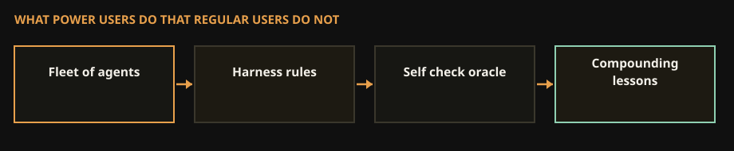
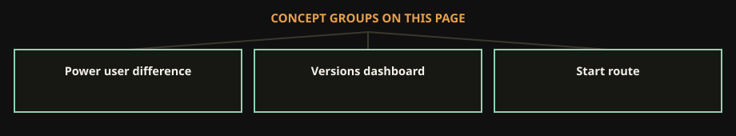

What power users do that regular users do not
Answer first. Power users run fleets of agents under a strict harness. Regular users run one chat and judge one answer.

The difference has five parts. Each part has support in more than one lab.
- Fleets, not chats. Five to fifteen parallel sessions or bots run at once. Boris Cherny runs five terminal sessions and five to ten web sessions. Grok Bot runs named bots on one shared cloud computer. Muse Code workflows can run up to 1,000 child tasks over a workflow life.
- Harness over answers. A short instruction file acts as a table of contents. Path rules, skills, hooks and linters carry the detail. OpenAI calls this pattern harness engineering.
- Self check oracles. Tests, screenshots, screen records and verify scripts let an agent prove a result. No oracle means no safe loop.
- Agent to agent review. A fresh context reviewer checks work from a writer agent. The reviewer did not write the code, so bias stays low.
- Compounding corrections. Each correction turns into a rule file line, a lint rule, a skill or an eval case. The system learns in files, not in chat memory.
Convergence fact. Three labs shipped the same product shape in about seven weeks: Meta Muse on 8 September 2026, OpenAI dots on 29 September 2026, and Claude Duet on 21 October 2026. Grok Bot beta came earlier, on 11 August 2026, as a team variant of the same shape. Each product gives one user a cloud computer, works while the user stays away, and asks before a hard to reverse act.
Latest versions dashboard, November 2026
| System | Status in source | Confidence |
|---|---|---|
| Grok model | Grok 4.7, model id grok-4.7, 21 September 2026. Grok 5 has no release in sources. | High |
| Grok Bot | Beta 11 August 2026. Version 1.0 reported 11 November 2026. | Medium |
| Claude models | Fable 5.2 and Mythos 5.2 on 9 November 2026. Opus 5.5 on 22 September. Sonnet 5.5 on 28 September. | Medium to High |
| Claude Code | Official changelog has a 19 November 2026 entry. A tracker lists 2.1.325 on 13 November. Exact latest patch stays open. | High for date, Medium for number |
| Claude Duet | Research preview 21 October 2026. US waitlist. Built on Opus 5.5. | High |
| Gemini model | Gemini 4 Argon GA 13 October 2026. Gemini 4 Carbon announced 28 October 2026. Gemini 3.5 Pro never shipped in API lists. | High, Medium Low for cancel word |
| Antigravity | Antigravity 2.0. Standalone app, IDE, CLI and SDK. Projects set agent scope. | Medium to High |
| Codex | CLI 0.169.0 on 13 November 2026 per official changelog index. Exact default model stays contested. Pin a model in config. | Medium to High |
| OpenAI dots | Launched 29 September 2026 at DevDay. Powered by GPT-6 Astra per launch reports. | High |
| Meta Muse agent | Launched 8 September 2026 in the US. iOS, Android and muse.ai. | High |
| Muse models | Muse Wonder and Wonder Full on 12 October 2026. Spark Open weights on 15 October 2026. | Medium |
| Muse Code | Meta terminal coding agent. Docs cover subagents, worktrees, workflows and skills import. | Medium to High |
Site map
Grok and Grok Bot. Bots, DeepSearch and business fleets.
Claude, Claude Code and Duet. The steering stack and the Cherny fleet.
Gemini and Antigravity. Agent Manager, Artifacts and goal loops.
Codex and dots. Harness engineering at one million lines.
Muse. Meta personal agent, Muse models and Muse Code. Muse is a Meta product. No Apple product named Muse appears in sources.
Cross-cutting. MCP, skills, solo stacks and vibe coding guardrails.
Power user profiles. Who does what, with flags on weak claims.
Prompt Vault. Ten plus prompts and patterns, each with a badge.
Engineering principles. Harness, loop, graph and verification rules.
Sources. The full ledger and library.
Top five surprise patterns
- Top teams ban acts that humans value. One team bans most code comments and one React hook for agents, and turns each ban into a lint rule.
- Skills became a cross vendor format in one year. One SKILL.md folder loads in tools from Anthropic, OpenAI, Google, Meta and Cursor.
- Model names lost value as durable facts. Two announced flagships, Gemini 3.5 Pro and Grok 5, had no release in sources by 20 November 2026.
- Pull request volume lost value as a quality metric. Credible teams report revert rate, eval pass rate and release rate.
- Attention became the scarce resource. Morning briefs, exception alerts and output compression all protect human attention, not model tokens alone.

Visual map of this page
Three views of one page: a Mermaid flow for work order, a markmap for concept groups, and a read guide for the flow.
Mermaid source, for offline read
flowchart LR A[One chat] --> B[Fleet of sessions] B --> C[Harness: rules, skills, hooks] C --> D[Oracle: tests and proof] D --> E[Ship] D --> F[Lesson to rule file] F --> C
How to read the flow diagram. Step 1: start at the left box. Step 2: follow each arrow to the next stage. Step 3: at a branch box, read both paths before a choice. Step 4: a loop arrow means work returns for one more pass vs a test.
Markmap: concepts on this page
- What power users do that regular users do not
- Power user difference
- Fleets, not chats
- Harness over answers
- Fresh eyes review
- Versions dashboard
- Grok 4.7
- Claude Fable 5.2
- Gemini 4 Argon
- Codex CLI 0.169.0
- Start route
- Start Here page
- Lab 1 first
- One prompt per day
- Power user difference